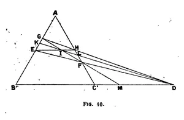
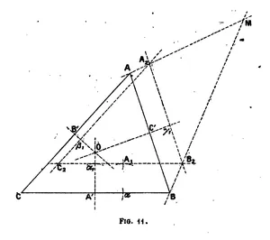

Part IV: Guiding Principles, Modern Triangle Geometry & Reflections¶
La Géométrographie (Pau 1892 / Paris 1893, pp. 36–66) — Principes, Probs. XLIX–LXIII (FIGS. 10–11), Observations & Résumé
Lemoine’s Five Guiding Principles and simultaneous 1/10 & 1/15 division (FIG. 10), normal coordinates (FIG. 11), modern triangle centers X(2), X(6), Brocard, Steiner X(99), Tarry X(98), Gergonne X(7), Spieker X(10), Nagel X(8), Neuberg Φ, methodological replies to Mannheim, Brocard, and d’Ocagne, and the complete Analytical Summary.
Outline of Part IV¶

Five Guiding Principles & Simultaneous 1/10 and 1/15 Division
We said above that the art of geometric constructions, or Geometrography, rested upon principles of the most extreme simplicity; the digression concerning the constructions of Messrs. Chasles and Mannheim caused us to defer the statement of these principles; here they are:

Problem XLIX: Constructing a Point from Normal Coordinates
The new geometry of the triangle makes even more evident how indispensable it is to occupy oneself systematically with the art of constructions, for everything relating to it, in the matter of constructions, reduces in the last analysis to the construction of remarkable points—that is, those whose normal coordinates, expressed as functions of the elements of the triangle, exhibit cyclic symmetry.
Problems L–LIII: Centroid X(2), Lemoine Point X(6) & Lemoine Line
L. — Place the center of gravity of a triangle ABC.
Problems LIV–LXIII: Brocard, Steiner, Tarry, Gergonne, Spieker, Nagel & Neuberg
LIV. — Place a BROCARD point.
Various Observations: Idealizations, Oran Notation & Replies to Mannheim and Brocard
I have treated this question especially to give an example of how construction problems are discussed; I will add that constructions drawn from theorems of the geometry of the triangle (like construction b of this point \(W\)) are, so to speak, always much simpler than those deduced merely from the value of the coordinates of the point to be constructed, whatever care one takes, moreover, as I have done here, to economize the constructions by taking advantage of all simplifications suggested by the nature of the data.
Complementary Note & Analytical Summary (d’Ocagne, Laisant & Complete Index)
My friend M. Maurice d'Ocagne, who kindly presented this memoir to the Section of Mathematics, wrote me a gracious letter regarding it from which I extract the following lines: “… I believe that from the point of view of pure speculation, a solution capable of being summed up in briefer language will always be preferred to another, even if the latter were simpler in the absolute sense you give to that word; one must indeed note that most constructions indicated in pure geometry are destined never to be actually realized—such are constructions of centers of curvature for curves other than the usual curves; it is therefore better that they be expressed in a more concise, more elegant form, rather than translated into a more expeditious graphical operation. That is far, moreover, from taking away the interest attached to the ingenious considerations you have developed; these indeed find a vast field of application in practical geometry and especially in descriptive geometry. The art of drafting drawings has everything to gain by drawing inspiration from your methods… I share with you these reflections which I offered to our colleagues of the First Section, so that you may reply to them…”